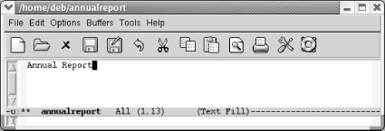
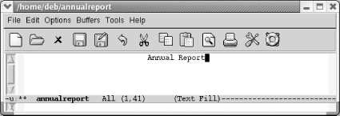
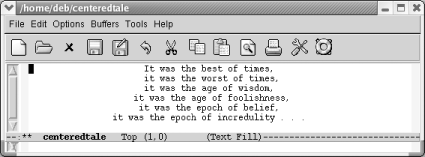

7.3. Centering Text
Another common formatting task is
centering
text. For example, you might want to center the title of a document
or individual headings within a document. Emacs provides commands to
center lines, paragraphs, and regions.
In text mode, you can center a line by simply typing the line you want to
center (or moving anywhere on an existing line), and then pressing
M-s.
|
Type: Annual Report
| |

| |
You type the document's title.
|
|
Type: M-s
| |

| |
Emacs centers the line.
|
You can also center paragraphs
and
regions. In both cases, Emacs does line-by-line centering rather than
block centering. To center a paragraph, use the command M-S (for center-paragraph); to center a region, use
M-x center-region. For example,
let's say you want to center the following
quotation.
|
Type: M-S
| |

| |
Text is now centered.
|
In this case, line-by-line
centering
looks rather artistic. But there are times when you might wish Emacs
did block centering. You can replicate this effect by using the
indent-rigidly command, discussed
earlier in this chapter. You just have to play with the indentation
to see how far the block of text should be indented to look centered.
There's one more choice for centering. You can
change justification by choosing Edit Text
Properties Justification Center. This command
works on whatever text is selected. Text
Properties Justification Center. This command
works on whatever text is selected.
Table 7-3 lists the commands used to center text.
Table 7-3. Centering commands|
Keystrokes
|
Command name
|
Action
|
|---|
|
M-s
|
center-line
|
Center the line the cursor is on.
| |
M-S
|
center-paragraph
|
Center the paragraph the cursor is on.
| |
(none)
|
center-region
|
Center the currently defined region.
| |
(none)Edit Text
Properties
Justification
Center
|
set-justification-center
|
Center selected text.
|
|